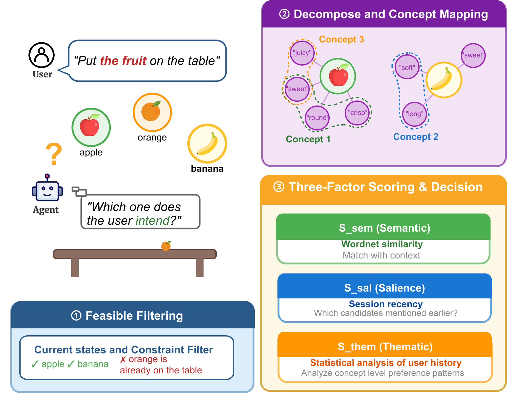
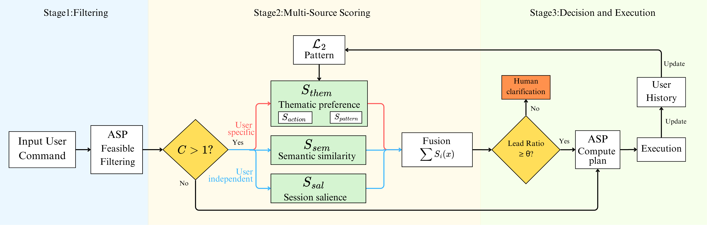
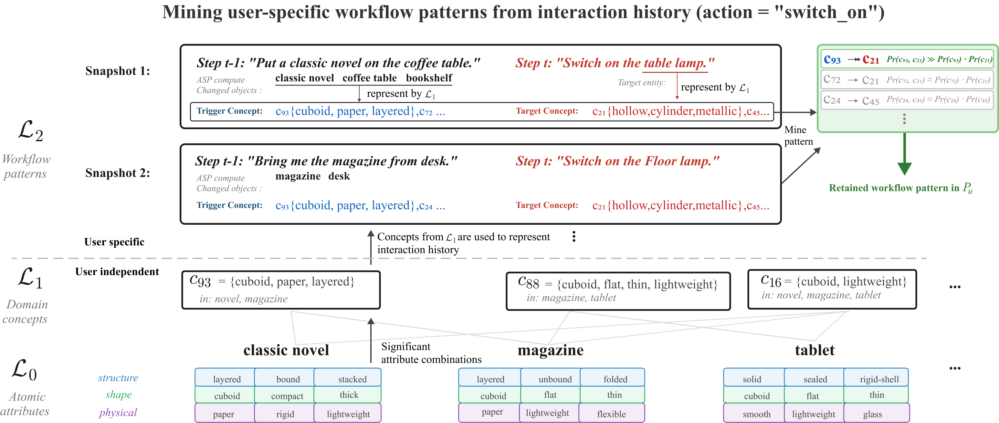

Embodied home-assistant agents often struggle with ambiguous commands like "bring me a fruit" because user preference data is extremely sparse at the object level. For example, observing a user pick an apple provides no direct evidence about their preference for oranges. Current state-of-the-art approaches such as deep models or Large Language Models (LLMs) compensate for this sparsity by leveraging massive pre-training data. However, they reflect population-level statistical associations rather than the preferences of a specific user in a specific context. How to capture personalized habits from limited interaction history remains an open problem.
We propose a disambiguation architecture based on a hierarchical concept representation. First, entities are decomposed into atomic attributes. We then use an unsupervised, data-driven method to mine significant attribute combinations, forming concepts that represent each entity in a fine-grained and shareable way. By analyzing interaction history at this concept level, the system identifies personalized workflow patterns tied to specific actions that transfer across different entities sharing common characteristics. We integrate this representation with Answer Set Programming (ASP) to track the world state and filter out physically impossible candidates. Finally, the agent fuses semantic compatibility, session salience, and user-specific thematic preference, requesting clarification only when confidence is low. Experiments show that our approach consistently outperforms LLM baselines, particularly in highly personalized scenarios.

Fig. 1. ASP filters infeasible candidates, compositional concepts map entities to shared attribute bundles, and three signals (semantic, salience, thematic preference) are fused to resolve ambiguous references or trigger clarification.

Fig. 2. Three-stage disambiguation framework. Stage 1: The agent parses the ambiguous command and applies ASP-based feasibility filtering using domain knowledge (Σ, Π) to obtain a candidate set Ct. Stage 2: If |Ct| > 1, candidates are scored by fusing semantic similarity (Ssem), session salience (Ssal), and user-specific thematic preference (Sthem). Stage 3: The agent selects the top candidate if the lead ratio exceeds threshold θ, or invokes human clarification otherwise. Each resolved interaction updates the user history, enabling continuous refinement of learned user preferences.

Fig. 3. Overview of the three-layer compositional hierarchy. L0 and L1 are domain-level and constructed before deployment; L2 mines user-specific workflow patterns from interaction snapshots filtered by action predicate. The figure illustrates two example snapshots for switch_on, with the retained pattern c93 → c21 indicating that this user tends to select entities with hollow, cylinder, metallic properties after interacting with cuboid, paper, layered entities.